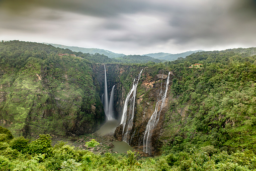
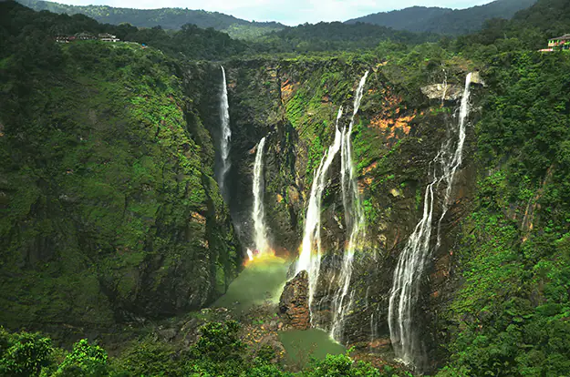

1. Sharavathi, a river which rises at Ambutirtha, next to Nonabur, in the Thirthahalli taluk takes a northwesterly course by Fatte petta, receives the Haridravati on the right below Pattaguppe and the Yenne Hole on the left above Barangi. Then, it bends to the west, precipitates itself down the Jog Falls (aka Gersoppa Falls), and passes the village of Gersoppa (properly Geru-Sappe), which is some 30 kilometres (19 mi) away, discharging into the Arabian Sea at Honnavar in Uttara Kannada.
The Sharavathi, flowing over a very rocky bed about 250 yards (230 m) wide, reaches a tremendous chasm, 290 m (950 ft) deep, and the water comes down in four distinct falls, Raja, Rani, Roarer and Rocket.[11] The Raja Fall comes down in one unbroken column sheer to the depth of 250 m (830 ft). Halfway down, it is encountered by the Roarer, which precipitates itself into a vast cup and then rushes violently downwards to meet the Raja. The Rocket shoots downwards in a series of jets. The Rani moves quietly over the mountainside in a sheet of foam. The Tourism Department has built steps from the viewpoint at the top, where the waterfall can be seen from across, to the bottom of the hill. There are approximately 1,400 steps made to reach the bottom of the hill.